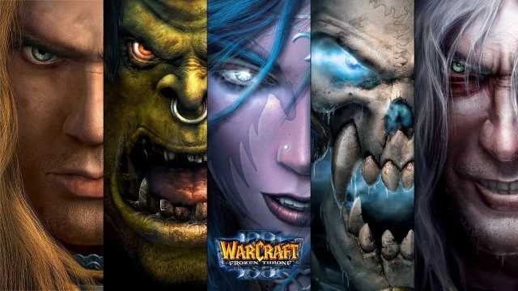
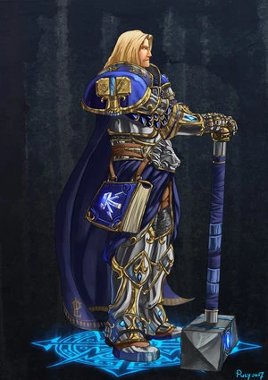
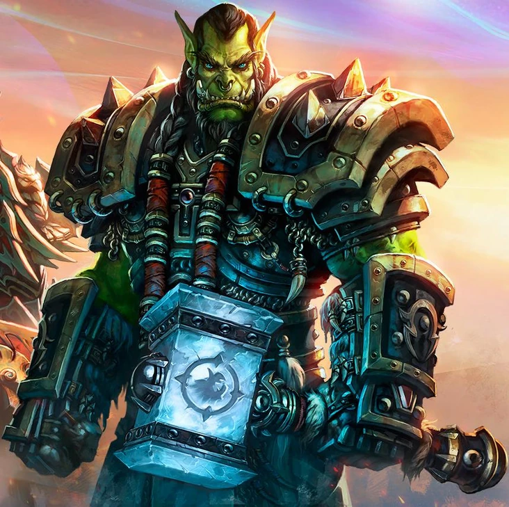
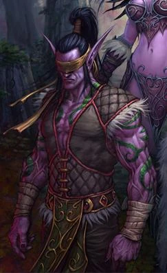
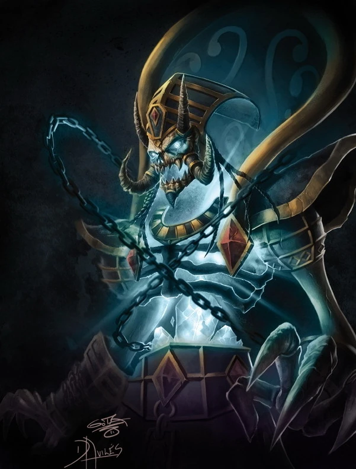
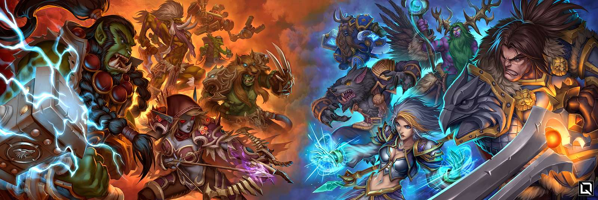

World of Warcraft: Regin of Chaos es un juego de estrategia en tiempo real desarrollado por Blizzard Entertainment. El juego se lanzó en 2002 y se convirtió en uno de los títulos más populares del género. En el juego, los jugadores pueden elegir entre tres razas diferentes (Humanos, Orcos y Elfos Nocturnos) y construir su base, recolectar recursos y entrenar unidades para luchar contra sus enemigos. El juego también cuenta con una campaña para un jugador que sigue la historia de la guerra entre las razas. World of Warcraft: Regin of Chaos es conocido por su jugabilidad adictiva, gráficos impresionantes para su época y una comunidad activa de jugadores.
En Warcraft III: Reign of Chaos hay cuatro razas jugables: Humanos, Orcos, Elfos nocturnos y Muertos vivientes.Cada una tiene su propio estilo: los Humanos son equilibrados, los Orcos son ofensivos, los Elfos nocturnos destacan por su movilidad y sigilo, y los Muertos vivientes usan mecánicas oscuras y estratégicas. Cada raza cuenta con uno o mas campeones que representa la esencia de su raza.




En Warcraft III: Reign of Chaos, hay dos facciones principales: la Alianza y la Horda. La Alianza está compuesta por Humanos, Enanos, Elfos Nocturnos y Gnomos, mientras que la Horda está formada por Orcos, Trolls, Tauren y Renegados. Cada facción tiene su propia historia, cultura y objetivos dentro del juego. La Alianza busca mantener la paz y el orden en Azeroth, mientras que la Horda lucha por su supervivencia y libertad. Estas facciones a menudo entran en conflicto entre sí, lo que añade una capa adicional de estrategia y narrativa al juego.

Cada una de las cuatro razas jugables ofrece un estilo de juego radicalmente distinto. Esta tabla resume sus características para ayudarte a elegir tu favorita:
| Raza | Dificultad | Héroe estrella | Fortaleza | Magia / Unidades especiales | Ideal para |
|---|---|---|---|---|---|
| Humanos Alianza | Media | Paladin | Defensa y curación | Alta (Archmage, Priests) | Nuevos jugadores |
| Orcos Horda | Media-Baja | Far Seer | Ataque directo | Media (Shamanes, totems) | Jugadores agresivos |
| No-muertos Azote | Alta | Death Knight | Mecánicas únicas de edificios | Muy alta (Necromancers) | Jugadores experimentados |
| Elfos de la Noche Kalimdor | Alta | Demon Hunter | Movilidad y emboscadas | Alta (Druidic magic) | Jugadores tácticos |